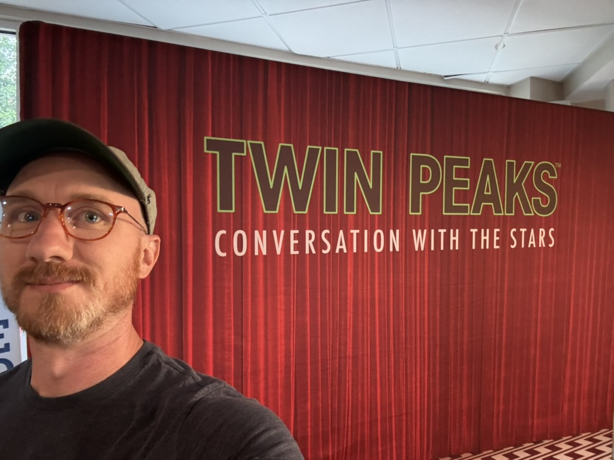

Providence, RI

Research
My work centers on metalepsis — the moment when a story's frame becomes visible and breakable — as a technology of transformation. Drawing on Gérard Genette's formal narratology and Alain Badiou's theory of the event, I ask how narrative genres constitute subjects, and how conversion and political transformation exploit the same formal mechanisms. Touchstones include Borges, Nabokov, Tokarczuk, Tulathimutte, Lynch, Schoenbrun, and games like TUNIC and Fez.